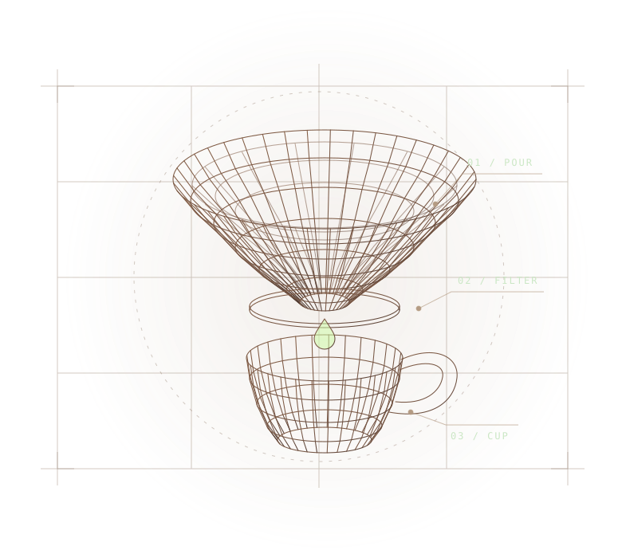

家で淹れるコーヒー
お湯の注ぎ方、豆の挽き目、フィルター。
家で一杯を淹れるときの手引きです。
淹れ方を読む

記事一覧
- コーヒーの挽き目の違い｜粗挽き・中挽き・中細挽き・細挽きの選び方コーヒーの挽き目の違いを、粗挽き・中挽き・中細挽き・細挽きの比較表で整理。フレンチプレス、ドリップ、急冷式、水出しなど器具と淹れ方ごとの目安、粉を買うときの頼み方、ミルの設定を比べる手順を紹介します。2026年11月27日
- コーヒー豆の保存方法と保存期間の目安｜常温・冷蔵・冷凍と粉の早見表コーヒー豆の保存方法と保存期間の目安を、常温・冷蔵・冷凍・粉に分けて早見表で整理しました。米国コーヒー協会の目安をもとに、容器と置き場所の選び方、冷凍した豆の取り出し方、袋の期限表示との違いを解説します。2026年11月26日
- ハンドドリップは、注ぐ速さ・挽き目・フィルターでどう変わる？ハンドドリップの味を、注ぐ速さ・抽出時間・挽き目・フィルターで比べます。早見表と、薄い・苦い・落ちるのが遅いときの直し方を初心者向けに解説。2026年11月24日
- フレンチプレスの淹れ方｜粉と湯の量、挽き目の目安フレンチプレスの淹れ方を初心者向けに解説。粗挽きの粉と湯の量、待ち時間、押し方、ペーパードリップとの違い、粉っぽいときの見直し方を紹介します。2026年11月24日